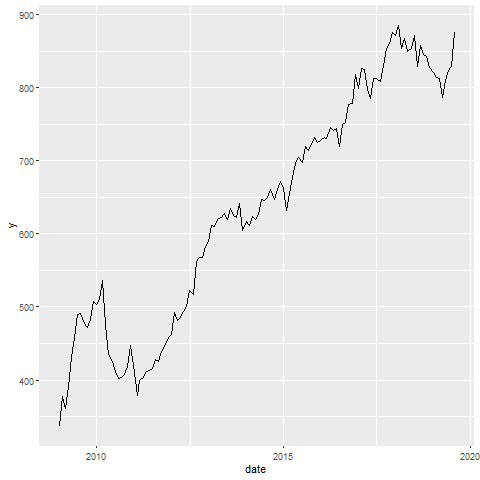

I’ve been thinking about smoothing time series data. I tweeted out a bite size bit of code.
To fit it into a tweet, I had to squeeze things down a bit.
Slightly more verbose, and using fredr to get data from FRED using their API. You’ll need an API key from FRED. These data happen to be for New Private Housing Units Authorized by Building Permits - in Structures with 1 Unit.
# libraries
library(tidyverse)
library(gganimate)
library(fredr)
# using fredr
# get key https://research.stlouisfed.org/docs/api/api_key.html
# set key
fredr_set_key("YOUR_KEY_FROM_FRED")
d <-
fredr(series_id = "PERMIT1",
observation_start = as.Date("2009-01-01")) %>%
# rename value as price
rename(price = value)
# could use tidyquant:
# d<-tidyquant::tq_get("PERMIT1",get="economic.data")
# code:
tibble(x = 1:60) %>%
mutate(data = map(x, ~ d %>%
mutate(y = zoo::rollapply(
d$price,
.x,
mean, fill = NA
)))) %>%
unnest(data) %>%
ggplot(aes(x = date, y = y)) +
geom_line() +
transition_states(x)The code sets an anonymous function with map to construct a rolling average of window size x. We increase the window of the moving average from 1 month (no smoothing) to 60 months (5-year centered moving average). Then make a little movie:
